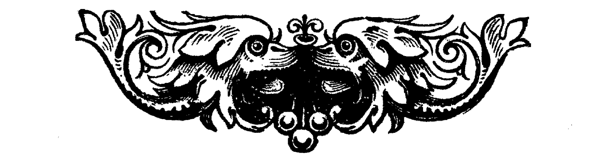

Cesarstwo Europejskie
„Od czasu Początku Europa pogrążona była w wojnie. Ludzie nie znali pokoju, nie znali też prawa. Znali strach i śmierć. Wiela krwi płynęło wtedy strumieniami, a co rzeki już przyjąć nie mogły, wsiąkało w ziemię. Zboże rosło krwawe, chleb ludzie krwawy z niego lepili i znów krwią braterską pola urzyźniali.
Chaos ten zmęczył znacznie bogów, bo zapomnieli o nich ludzie w swej pysze i gniewie. Zesłali wtedy człowieka imieniem Elvis, mocą wielką i mądrością go obdarzywszy. Miał zakończyć erę wojen i dać ludziom pokój. Sto lat mu zajęło jednoczenie kontynentu, ale namaszczenie boskie uchroniło go przed srebrem głowy i słabością ciała.
Dwaj ostatni wrogowie jego, lubujący się w wojnie i okrucieństwie, nie chcieli, aby boski Wybraniec uwolnił ludzi od bólu i cierpienia. Uknuli spisek, wciągając Pomazańca w jeszcze jedną wojnę.
Ostatnia Wojna, nazywana też Wojną Dzieci, była najbardziej krwawą ze wszystkich. Przeraziła nawet tych, którzy ją wywołali. Poddali się wtedy Pomazańcowi, ale opamiętali się za późno, gdyż ten już nie miał w sercu litości. Miał tylko ból – ból tysięcy pomordowanych. Wodzów zabił z takim okrucieństwem, z jakim oni wcześniej mordowali niewinnych.
Ich plemiona zaś wygnał na pogranicza Europy – Veturów, za to że tak kochali wojnę, wygnał na wschód, gdzie pełnić mieli wieczną straż nad jej granicami – tam nigdy pokoju zaznać nie mieli. Eyjanów, którzy za okrucieństwa odpowiadali największe, zesłał na zachodnie wyspy, aby równie okrutne morze od dobrych ludzi ich oddzielało. Tam z żywiołem mieli się zmagać bezlitosnym po wsze czasy.
Później Elvis zasmucił się bardzo tym co uczynił i z tego smutku umarł. Kiedy poddani złożyli go w grobowcu, bogowie zapłakali gorzko nad jego ciałem. Płakali przez rok cały i jeden dzień, aż łzy zatopiły grobowiec wraz z doliną, w której stał grób, tworząc Morze Łez. Śmierć Elvisa zakończyła ostatecznie Erę Wojen. W ostatniej woli Pomazaniec zostawił ludziom Cesarstwo Europejskie, i od tego dnia liczone są Lata Cesarstwa. W swej wielkiej mądrości wyznaczył też kolejnych cesarzy na setki lat wprzód, Mędrcom powierzając pieczę nad tą wiedzą. Tilowie, pierwszy lud, który za nim podążył sto lat wcześniej, był najszlachetniejszy ze wszystkich i prawy. Im więc nadał zaszczyt i obowiązek strzeżenia Mędrców, aby żaden wróg nie poznał imion następców i nie zechciał w złej woli swojej ich wykorzystać.”